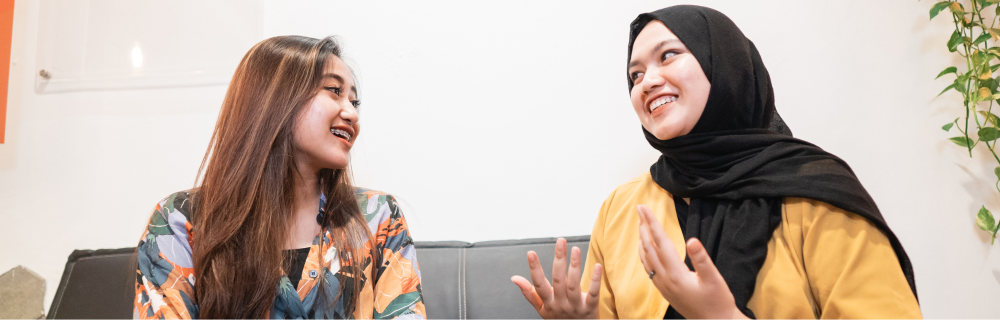

„Können wir kurz reden?" – dieser eine Satz reicht, um bei den meisten ErzieherInnen sofort die Alarmglocken läuten zu lassen. Dabei wissen sie in der Regel genau, was sie sagen wollen. Das Problem liegt woanders: Wie fange ich an? Wie bleibe ich ruhig, wenn die Eltern defensiv werden? Und wie beende ich das Gespräch so, dass wirklich etwas hängen bleibt?
In Gesprächen mit ErzieherInnen und pädagogischen Fachkräften aus unseren Fortbildungen taucht dieses Thema regelmäßig auf. Nicht weil die Fachkräfte keine Expertise hätten, im Gegenteil. Sondern weil Elterngespräche eine eigene Dynamik haben, die sich von der pädagogischen Arbeit mit Kindern grundlegend unterscheidet. Eltern sind keine KlientInnen, keine Vorgesetzten und keine KollegInnen. Sie sind Gesprächspartner auf Augenhöhe, mit eigenen Ängsten, Erwartungen und blinden Flecken.
Was hilft, ist Struktur. Nicht als Drehbuch, das man stur abarbeitet, sondern als innerer Kompass, der Sicherheit gibt und den Kopf frei macht. Ich zeige hier fünf Schritte, die sich in der Praxis bewährt haben, und spiele sie an drei echten Fallbeispielen durch.
Die 5 Schritte – ein Überblick
Vor dem Gespräch: Kurz sammeln, was der eigentliche Anlass ist
Wer unvorbereitet in ein Gespräch geht, redet oft um den heißen Brei herum. Nicht aus Feigheit, sondern weil die Gedanken im Moment nicht sortiert sind. Zwei Minuten Vorbereitung können den Unterschied machen. Konkret heißt das: den eigentlichen Anlass in einem Satz formulieren und, bei schwierigeren Themen, zwei bis drei konkrete Situationen notieren, auf die man sich beziehen kann. Keine Interpretationen, keine Bewertungen, nur das, was tatsächlich passiert ist.
Der Einstieg: Erst etwas Positives, dann das Thema
Ein Gespräch, das sofort mit einem Problem beginnt, setzt Eltern in die Defensive, bevor auch nur ein Wort über das eigentliche Thema gefallen ist. Eine kleine, echte Beobachtung zum Kind am Anfang, etwas, das heute gut lief oder das zeigt, dass man das Kind wirklich sieht, verändert die Atmosphäre spürbar. Danach kann das Thema kommen, und es wird ganz anders aufgenommen.
Der Hauptteil: Konkret statt allgemein, fragen statt urteilen
„Er ist manchmal schwierig im Gruppengeschehen" sagt nichts. „Am Dienstag hat er Wasser über Linas Teller gekippt" sagt alles. Konkrete Situationen geben Eltern die Möglichkeit, sich etwas vorzustellen und selbst einzuschätzen. Genauso wichtig: Fragen stellen statt zu urteilen. Wer fragt, bekommt Informationen und signalisiert gleichzeitig, dass man die Perspektive der Eltern ernst nimmt. Pausen aushalten ist dabei oft das Schwerste, aber auch das Wirksamste.
Bei schwierigen Themen: Ruhig bleiben, nicht rechtfertigen
Wenn Eltern defensiv werden, schuldig fühlen oder ängstlich reagieren, ist das fast immer ein Zeichen dafür, dass sie das Thema ernst nehmen, eben das, was man möchte. Die Kunst besteht darin, die eigene Ruhe zu halten, nicht in eine Rechtfertigungs-Spirale zu geraten und das Gehörte einzuordnen, ohne es zu bewerten. Zuhören und einordnen, das ist in diesem Moment wertvoller als jede Erklärung.
Der Abschluss: Gemeinsam einen nächsten Schritt festlegen
Ein Gespräch, das ohne klares Ergebnis endet, hinterlässt auf beiden Seiten ein ungutes Gefühl. Dabei muss der nächste Schritt nicht groß sein. Es reicht, gemeinsam zu sagen, was in den nächsten Wochen passieren soll und wer dabei was tut. Klar und freundlich, ohne Druck. Das gibt dem Gespräch ein Ergebnis und zeigt, dass man an einer echten Zusammenarbeit interessiert ist.

Drei Fallbeispiele – Schritt für Schritt durchgespielt
Ich möchte diese fünf Schritte an drei Situationen zeigen, die aus unseren Fortbildungen bekannt sein dürften. Die Namen sind frei gewählt, die Konstellationen sind es nicht.
Was diese Struktur im Kern bewirkt
Was diese fünf Schritte gemeinsam haben: Sie stellen das Kind in den Mittelpunkt, nicht das Problem. Das klingt selbstverständlich, ist es aber in der Gesprächssituation oft nicht. Gerade wenn es heikel wird, neigen alle Beteiligten dazu, sich in Positionen zu verschanzen statt in Lösungen zu denken.
ErzieherInnen, die mit dieser Struktur arbeiten, berichten regelmäßig von zwei Veränderungen: Erstens fühlen sie sich selbst sicherer in das Gespräch und verlieren seltener den Faden. Zweitens reagieren Eltern kooperativer, weil sie merken, dass sie nicht angeklagt, sondern einbezogen werden.
Das ist kein Zufall. Es ist das Ergebnis einer klaren Gesprächsführung.
Elterngespräch-Leitfaden – kostenlos zum Download
Alle fünf Schritte kompakt auf einer Seite, zum Ausdrucken und für das nächste Gespräch griffbereit. Die drei Fallbeispiele sind ebenfalls enthalten.
Kommentiere auf Instagram HINHÖREN unter dem Beitrag vom 4. September, dann schicken wir dir den Leitfaden direkt als PDF.
Passende Fortbildungen bei EDULEO
Wer das Thema Elternarbeit vertiefen möchte, findet bei EDULEO zwei passende Angebote:
Elterngespräche führen
Tagesfortbildung (6 Std., 150 €). Praxisnah, mit konkreten Gesprächssituationen und direktem Feedback.
Zur FortbildungMarte Meo PraktikerIn
3-Monats-Fortbildung (8 Live-Termine, 900 €). Videobasierte Methode zur Unterstützung von Entwicklung im Alltag und in der Elternarbeit.
Zur Fortbildung